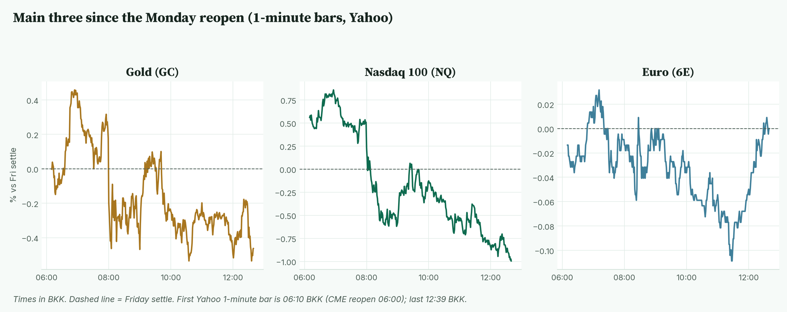
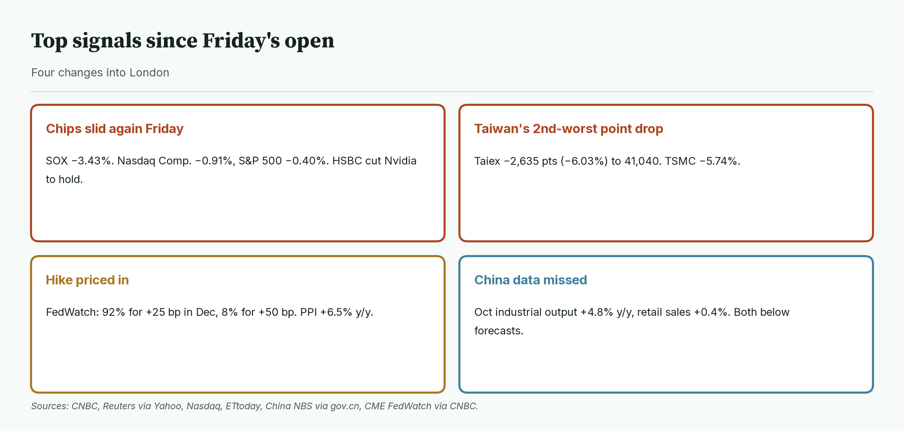
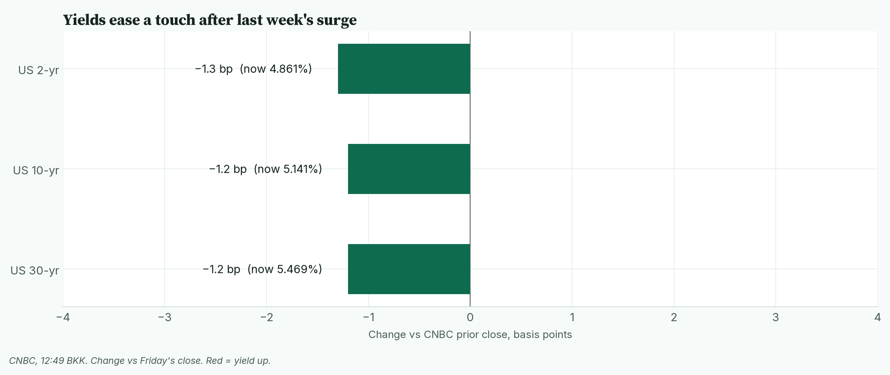
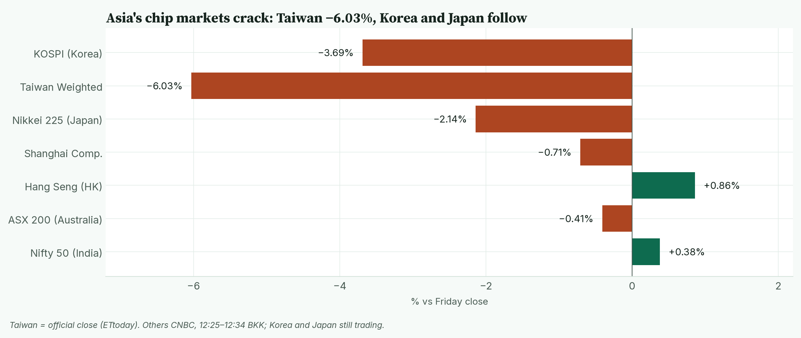
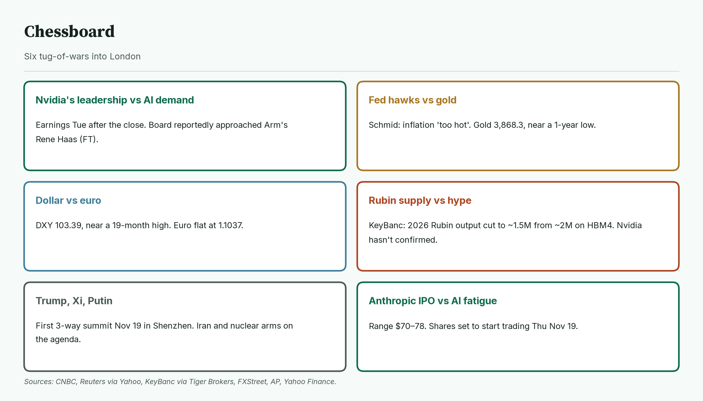
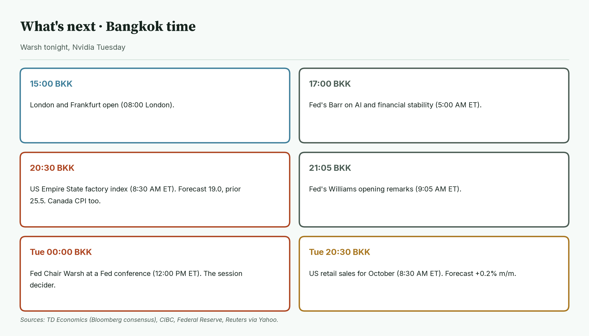
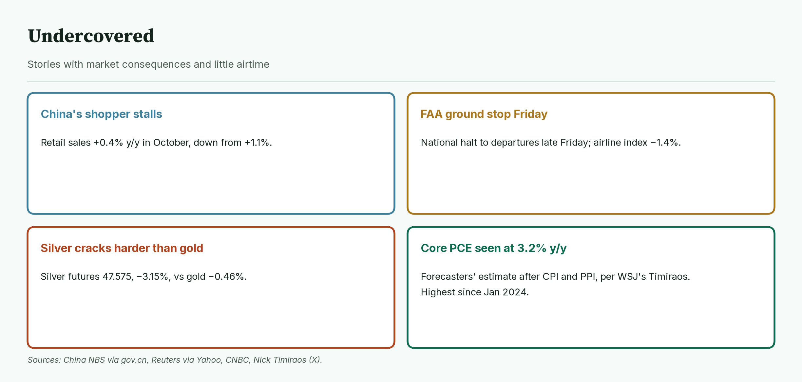
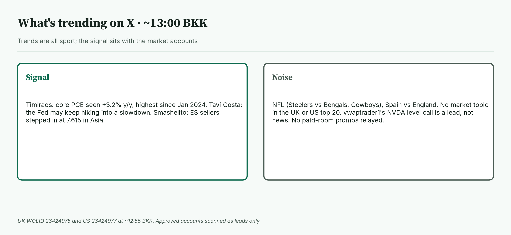

April · Market Intel, pre-London · Mon Nov 16, 2026 · ~13:10 BKK / ~06:10 London
Headline: Asia's chip markets cracked overnight. Taiwan fell 6.03%, its second-biggest point drop ever, and Nasdaq futures are at their session low, 27,755.25 (−1.00%). Gold futures slipped to 3,868.3 (−0.46%), near a one-year low. Euro futures are flat at 1.1037 (+0.00%). Fed Chair Warsh at 00:00 BKK Tuesday decides the session, with Nvidia's results on Tuesday night US time looming over all of it.
So what: two weights sit on the same scale. Nvidia's leadership crisis hits tech, and a near-certain December Fed hike hits gold. The dollar is the quiet winner.
 Caption: Futures at 12:39 BKK versus Friday's settle. Nasdaq leads the losses, gold drifts lower, the euro is unchanged. The VIX is Friday's close.
Caption: Futures at 12:39 BKK versus Friday's settle. Nasdaq leads the losses, gold drifts lower, the euro is unchanged. The VIX is Friday's close.
1) Main instruments The three main contracts since the Monday reopen, as a % move from Friday's settle. Nasdaq peaked just before 07:00 BKK and has sold off since. Gold gave up its early pop by 08:00 BKK. |
 Caption: The three main contracts since the Monday reopen, as a % move from Friday's settle. Nasdaq peaked just before 07:00 BKK and has sold off since. Gold gave up its early pop by 08:00 BKK.
(Quotes are Yahoo Finance futures at 12:39 BKK (05:39 London), matching CNBC. Session highs and lows use Yahoo 1-minute bars from the 06:00 BKK CME reopen (18:00 New York Sunday). Yahoo's first bar today is 06:10 BKK, so ranges run since 06:10 BKK.)
Caption: The three main contracts since the Monday reopen, as a % move from Friday's settle. Nasdaq peaked just before 07:00 BKK and has sold off since. Gold gave up its early pop by 08:00 BKK.
(Quotes are Yahoo Finance futures at 12:39 BKK (05:39 London), matching CNBC. Session highs and lows use Yahoo 1-minute bars from the 06:00 BKK CME reopen (18:00 New York Sunday). Yahoo's first bar today is 06:10 BKK, so ranges run since 06:10 BKK.)
- Gold futures (GC, Dec): 3,868.3, −0.46%, at 12:39 BKK. Driver: markets see a 92% chance of a December Fed hike, and higher rates make non-paying gold less attractive (CNBC, CME FedWatch). Friday's settle was 3,886.3. Today's range is 3,862.5 (08:03 BKK) to 3,904.3 (06:55 BKK). Spot gold fell 4.5% last week (CNBC).
- Nasdaq 100 futures (NQ, Dec): 27,755.25, −1.00%, at 12:39 BKK. Driver: the Nvidia sell-off spread to Asia's chipmakers. Friday's settle was 28,034.75. Today's range is 27,742.50 (12:39 BKK) to 28,279.25 (06:55 BKK). It is sitting on the low.
- Euro futures (6E, Dec): 1.1037, +0.00%, at 12:39 BKK. Driver: the dollar holds near a 19-month high (Reuters), and the euro is waiting for euro-area inflation on Wednesday. Friday's settle was 1.1037. Today's range is 1.1025 (11:27 BKK) to 1.1041 (07:05 BKK).
- Takeaway: Nasdaq is the drag, gold is under the Fed's thumb, and the euro is parked.
Context. The dollar index (DXY, the dollar against six major currencies) is 103.391, −0.02% (CNBC, 12:49 BKK). The 10-year US yield (what the US government pays to borrow for 10 years) is 5.141%, down 1.2 basis points (CNBC, 12:49 BKK; a basis point is 0.01 percentage point). The VIX (the "fear gauge" built from S&P 500 option prices) closed Friday at 19.30, +3.21% (CNBC). US oil (CL, December) is 88.47, −0.10% (12:39 BKK). S&P 500 futures (ES) are 7,546.75, −0.48% (12:39 BKK). Bitcoin is $64,587, −0.59% versus CNBC's previous close (CNBC/Coin Metrics, 12:49 BKK).
2) Top signals Four changes since Friday's open. Chips slid, Taiwan cracked, a Fed hike is priced in, and China's data missed. |
 Caption: Four changes since Friday's open. Chips slid, Taiwan cracked, a Fed hike is priced in, and China's data missed.
Caption: Four changes since Friday's open. Chips slid, Taiwan cracked, a Fed hike is priced in, and China's data missed.
- Chips sold off again on Friday. The Philadelphia chip index (SOX) fell 3.43% to 10,146.32 (Nasdaq). The Nasdaq Composite fell 0.91% and the S&P 500 0.40% (CNBC).
- HSBC cut Nvidia to hold and its price target to $170 from $360. Nvidia fell about 2% (CNBC, Xinhua).
- Taiwan's Taiex fell 2,635 points (−6.03%) to 41,040, its second-biggest point drop on record. TSMC fell 5.74% (ETtoday).
- China's October data missed. Industrial output rose 4.8% from a year earlier and retail sales only 0.4%, both below forecasts (China NBS via gov.cn, Caixin).
- Takeaway: the selling has moved from Nvidia to the whole Asian chip supply chain.
3) Rates, FX and oil Yields dipped slightly in Asia after last week's surge. The 10-year is still above 5.1%. |
 Caption: Yields dipped slightly in Asia after last week's surge. The 10-year is still above 5.1%.
Caption: Yields dipped slightly in Asia after last week's surge. The 10-year is still above 5.1%.
- CNBC, 12:49 BKK: 2-year 4.861% (−1.3 bp), 10-year 5.141% (−1.2 bp), 30-year 5.469% (−1.2 bp).
- The 10-year rose 29.5 bp last week. Hot consumer and producer prices did it. October PPI (prices businesses charge) was +6.5% from a year earlier, the most since November 2022 (CNBC).
- Fed hike odds: 92% for +25 bp in December, 8% for +50 bp (CME FedWatch via CNBC). Kansas City Fed's Schmid said Sunday inflation is still "running too hot" (CNBC).
- USD/JPY 159.42, −0.15% (CNBC, 12:49 BKK). The yen is close to 160 per dollar.
- Oil is calm. WTI 88.47 and Brent 95.51, −0.34% (CNBC, 12:39 BKK).
- Takeaway: rates are taking a breather, not turning.
4) Why it matters Asia's chip-heavy markets led the losses. Taiwan is its official close. The rest are CNBC prints from 12:25 to 12:34 BKK, with Korea and Japan still trading. |
 Caption: Asia's chip-heavy markets led the losses. Taiwan is its official close. The rest are CNBC prints from 12:25 to 12:34 BKK, with Korea and Japan still trading.
Caption: Asia's chip-heavy markets led the losses. Taiwan is its official close. The rest are CNBC prints from 12:25 to 12:34 BKK, with Korea and Japan still trading.
- KOSPI 5,095.21 (−3.69%) and Nikkei 59,836.86 (−2.14%) at CNBC's 12:29 and 12:34 BKK prints. Tokyo Electron, Kioxia and SK hynix were among the hardest hit (Malay Mail/AFP).
- Hong Kong was the exception, +0.86% (CNBC, 12:34 BKK).
- The Nvidia story has three layers. Huang resigned last week after an affair with a woman the US suspects of spying for China (Reuters). The FT reports the board approached Arm's Rene Haas as a successor (via Reuters).
- A supply worry sits underneath. KeyBanc cut its 2026 estimate for Nvidia's next chip, Rubin, to about 1.5 million from about 2 million, citing memory supply. Nvidia has not confirmed a delay (KeyBanc via Tiger Brokers).
- Takeaway: London opens into a tech sell-off it did not cause, but European chip names will feel it.
5) Chessboard of tensions Six tug-of-wars into London. The Fed and Nvidia move the main three fastest. |
 Caption: Six tug-of-wars into London. The Fed and Nvidia move the main three fastest.
Caption: Six tug-of-wars into London. The Fed and Nvidia move the main three fastest.
- Nvidia's leadership vs AI demand. Results come Tuesday after the US close, the first without Huang (Reuters).
- Fed hawks vs gold. Hike talk keeps pushing gold toward last week's one-year low.
- Dollar vs euro. DXY sits near a 19-month high. The euro needs a hawkish ECB to push back.
- Rubin supply vs hype. Memory supply, not demand, is the reported bottleneck.
- Trump, Xi and Putin hold their first three-way summit on Nov 19 in Shenzhen, beside APEC. Iran and nuclear arms are on the agenda, and no deal is expected (CNBC, AP).
- Anthropic's IPO vs AI fatigue. The price range is $70 to $78, with trading set for Thu Nov 19 (CNBC, Yahoo Finance). A weak debut would hit AI sentiment.
- Takeaway: every square on the board is about AI or the Fed.
6) Leading indicators (BKK times) London opens, Fed speakers fill the day, and Warsh speaks at midnight BKK. Retail sales follow Tuesday. |
 Caption: London opens, Fed speakers fill the day, and Warsh speaks at midnight BKK. Retail sales follow Tuesday.
Caption: London opens, Fed speakers fill the day, and Warsh speaks at midnight BKK. Retail sales follow Tuesday.
- 15:00 BKK: London and Frankfurt open.
- 17:00 BKK: Fed's Barr on AI and financial stability (5:00 AM ET).
- 20:30 BKK: US Empire State factory index (8:30 AM ET). Forecast 19.0, prior 25.5. Canada's October CPI too (TD Economics).
- 21:05 BKK: Fed's Williams, opening remarks (9:05 AM ET).
- Tue 00:00 BKK: Fed Chair Warsh at a Fed conference (12:00 PM ET). This is the session decider.
- Tue 07:00 BKK: Fed Vice Chair Jefferson (7:00 PM ET Monday) (Federal Reserve).
- Tue 20:30 BKK: US retail sales for October. Forecast +0.2% month on month (TD Economics, CIBC).
- Levels to watch: Gold 3,862.5 (today's low) and 3,904.3 (high). Nasdaq 27,742.50 (low) and 28,279.25 (high). Euro 1.1025 and 1.1041.
- Takeaway: a hawkish Warsh would hit gold and Nasdaq together. A soft one gives both a bounce.
7) Undercovered Four stories with little airtime. They touch China's consumer, US travel, silver and the Fed's favourite inflation gauge. |
 Caption: Four stories with little airtime. They touch China's consumer, US travel, silver and the Fed's favourite inflation gauge.
Caption: Four stories with little airtime. They touch China's consumer, US travel, silver and the Fed's favourite inflation gauge.
- China's shopper has stalled. Retail sales grew 0.4% a year in October, down from 1.1% in September (China NBS, Caixin).
- The FAA halted all US departures late Friday after air traffic control communication problems. The airline index fell 1.4% (Reuters via Yahoo).
- Silver is falling faster than gold. Silver futures are 47.575, −3.15% (CNBC, 12:39 BKK).
- Core PCE, the Fed's preferred inflation gauge, is seen at 3.2% a year for October, the highest since January 2024. That is a forecasters' estimate after CPI and PPI, as tallied by WSJ's Nick Timiraos on X, not official data.
- Takeaway: inflation is broadening while China slows, a bad mix for commodities.
8) What's trending on X UK and US trends are all sport. The market signal sits with the accounts we track. |
 Caption: UK and US trends are all sport. The market signal sits with the accounts we track.
Caption: UK and US trends are all sport. The market signal sits with the accounts we track.
- Signal: Timiraos's core PCE tally (above). Tavi Costa warns the Fed may keep "hiking into deceleration", meaning raising rates as growth slows (his view, not data). Smashelito flagged ES sellers stepping in at 7,615 early in Asia; ES's session high was 7,614.25 (Yahoo).
- Noise: NFL (Steelers vs Bengals, Cowboys) and Spain vs England fill the UK and US top 20 at about 12:55 BKK. No market topic made either list.
- Lead only: vwaptrader1 posted Nvidia stock levels. That is a trader's view, not news. No paid-room promos are relayed.
- Takeaway: the crowd is watching football. The money is watching Warsh.
Notes: Korea and Japan were still trading at publish, so their figures are intraday. Kospi and Nikkei closes will differ. The Rubin cut is an analyst estimate, not company guidance. All quote times are BKK (UTC+7). |